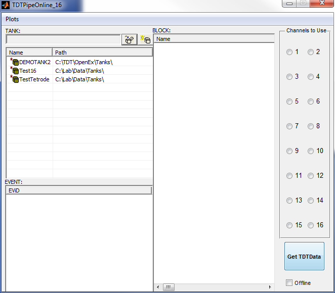

function varargout = TDTPipeOnline_16(varargin) % TDTPIPEONLINE_16 MATLAB code for TDTPipeOnline_16.fig % TDTPIPEONLINE_16, by itself, creates a new TDTPIPEONLINE_16 or raises the existing % singleton*. % % H = TDTPIPEONLINE_16 returns the handle to a new TDTPIPEONLINE_16 or the handle to % the existing singleton*. % % TDTPIPEONLINE_16('CALLBACK',hObject,eventData,handles,...) calls the local % function named CALLBACK in TDTPIPEONLINE_16.M with the given input arguments. % % TDTPIPEONLINE_16('Property','Value',...) creates a new TDTPIPEONLINE_16 or raises the % existing singleton*. Starting from the left, property value pairs are % applied to the GUI before TDTPipeOnline_16_OpeningFcn gets called. An % unrecognized property name or invalid value makes property application % stop. All inputs are passed to TDTPipeOnline_16_OpeningFcn via varargin. % % *See GUI Options on GUIDE's Tools menu. Choose "GUI allows only one % instance to run (singleton)". % % See also: GUIDE, GUIDATA, GUIHANDLES % Edit the above text to modify the response to help TDTPipeOnline_16 % Last Modified by GUIDE v2.5 18-Jan-2013 12:15:29 % Begin initialization code - DO NOT EDIT gui_Singleton = 1; gui_State = struct('gui_Name', mfilename, ... 'gui_Singleton', gui_Singleton, ... 'gui_OpeningFcn', @TDTPipeOnline_16_OpeningFcn, ... 'gui_OutputFcn', @TDTPipeOnline_16_OutputFcn, ... 'gui_LayoutFcn', [] , ... 'gui_Callback', []); if nargin && ischar(varargin{1}) gui_State.gui_Callback = str2func(varargin{1}); end if nargout [varargout{1:nargout}] = gui_mainfcn(gui_State, varargin{:}); else gui_mainfcn(gui_State, varargin{:}); end % End initialization code - DO NOT EDIT % --- Executes just before TDTPipeOnline_16 is made visible. function TDTPipeOnline_16_OpeningFcn(hObject, eventdata, handles, varargin) % This function has no output args, see OutputFcn. % hObject handle to figure % eventdata reserved - to be defined in a future version of MATLAB % handles structure with handles and user data (see GUIDATA) % varargin command line arguments to TDTPipeOnline_16 (see VARARGIN) % Choose default command line output for TDTPipeOnline_16 handles.output = hObject; % Update handles structure guidata(hObject, handles); global CurrentTank CurrentBlock CurrentEvent CN; CurrentTank = handles.activex5.ActiveTank; CurrentBlock = handles.activex6.ActiveBlock; CurrentEvent = handles.activex7.ActiveEvent; % Set server to 'Local' handles.activex5.UseServer = 'Local'; handles.activex5.Refresh; global CurrentServer; CurrentServer = 'Local'; global TT; TT = actxcontrol('TTank.X'); % UIWAIT makes TDTPipeOnline_16 wait for user response (see UIRESUME) % uiwait(handles.figure1); % --- Outputs from this function are returned to the command line. function varargout = TDTPipeOnline_16_OutputFcn(hObject, eventdata, handles) % varargout cell array for returning output args (see VARARGOUT); % hObject handle to figure % eventdata reserved - to be defined in a future version of MATLAB % handles structure with handles and user data (see GUIDATA) % Get default command line output from handles structure varargout{1} = handles.output; % -------------------------------------------------------------------- function activex5_TankChanged(hObject, eventdata, handles) % hObject handle to activex1 (see GCBO) % eventdata structure with parameters passed to COM event listener % handles structure with handles and user data (see GUIDATA) % Process Server and Tank selection information for TTankInterfaces.BlockSelect handles.activex6.UseServer = eventdata.ActServer; handles.activex6.UseTank = eventdata.ActTank; % Deselects the previously selected Block if the current Tank is changed handles.activex6.ActiveBlock = ''; handles.activex6.Refresh; % Deselects the previously selected Event and clears the event list if the current Tank is changed handles.activex7.UseBlock = ''; handles.activex7.ActiveEvent = ''; handles.activex7.Refresh; global CurrentTank; CurrentTank = eventdata.ActTank; % -------------------------------------------------------------------- function activex6_BlockChanged(hObject, eventdata, handles) % hObject handle to activex2 (see GCBO) % eventdata structure with parameters passed to COM event listener % handles structure with handles and user data (see GUIDATA) % Process Server, Tank, and Block selection information for TTankInterfaces.EventSelect handles.activex7.UseServer = eventdata.ActServer; handles.activex7.UseTank = eventdata.ActTank; handles.activex7.UseBlock = eventdata.ActBlock; % Deselects the previously selected Event if the current Block is changed handles.activex7.ActiveEvent = ''; handles.activex7.Refresh; global CurrentBlock data CN; CurrentBlock = eventdata.ActBlock; data=[]; CN = zeros(16,1); set(handles.radiobutton1,'Value',0); % -------------------------------------------------------------------- function activex7_ActEventChanged(hObject, eventdata, handles) % hObject handle to activex3 (see GCBO) % eventdata structure with parameters passed to COM event listener % handles structure with handles and user data (see GUIDATA) % Process Event Selection and refresh global CurrentEvent; CurrentEvent = eventdata.NewActEvent; handles.activex7.Refresh; % -------------------------------------------------------------------- function activex7_EventClicked(hObject, eventdata, handles) % hObject handle to activex7 (see GCBO) % eventdata structure with parameters passed to COM event listener % handles structure with handles and user data (see GUIDATA) % Process Event Selection and refresh global CurrentEvent; CurrentEvent = eventdata.ActEvent; handles.activex7.Refresh; % --- Executes on button press in getbutton. function getbutton_Callback(hObject, eventdata, handles) % hObject handle to getbutton (see GCBO) % eventdata reserved - to be defined in a future version of MATLAB % handles structure with handles and user data (see GUIDATA) % Hint: get(hObject,'Value') returns toggle state of getbutton global PT CurrentPInt offlineFlag data CurrentPEnd CurrentPInt = 60; val = get(hObject,'Value'); H = get(TDTPipeOnline_16,'Children'); hc=findobj(H,'Tag','getbutton'); if val && offlineFlag==1 % run the offline analysis script disp('Getting Data.. offline') set(hc,'BackgroundColor',[1 0 0]); set(hc,'String','Getting Data'); TPOff; elseif val % update button colow set(hc,'BackgroundColor',[0 1 0]); set(hc,'String','Getting Data'); disp('Starting Timer') start(PT) elseif ~val && offlineFlag==0 stop(PT) set(hc,'BackgroundColor',[0.9255 0.9137 0.8471]) set(hc,'String','Get TDTData'); elseif ~val && offlineFlag==1 data = []; CurrentPEnd = 0; disp('Reset offline sorting, ready for next file..') set(hc,'BackgroundColor',[0.9255 0.9137 0.8471]) set(hc,'String','Get TDTData'); end % --- Executes during object creation, after setting all properties. function getbutton_CreateFcn(hObject, eventdata, handles) % hObject handle to getbutton (see GCBO) % eventdata reserved - to be defined in a future version of MATLAB % handles empty - handles not created until after all CreateFcns called global CurrentPInt CurrentPEnd PT CurrentPInt = 60; % poll interval CurrentPEnd = 0; % end-time of last tank read % create timer object PT = timer('ExecutionMode','fixedSpacing',... 'BusyMode','queue',... 'Period',CurrentPInt,... 'StartFcn','TPOA(1)',... 'TimerFcn','TPOA(2)',... 'StopFcn','TPOA(0)'); % -------------------------------------------------------------------- function Plots_Callback(hObject, eventdata, handles) % hObject handle to Plots (see GCBO) % eventdata reserved - to be defined in a future version of MATLAB % handles structure with handles and user data (see GUIDATA) % -------------------------------------------------------------------- function sGUI_Callback(hObject, eventdata, handles) % hObject handle to sGUI (see GCBO) % eventdata reserved - to be defined in a future version of MATLAB % handles structure with handles and user data (see GUIDATA) sGUI % --- Executes when user attempts to close figure1. function figure1_CloseRequestFcn(hObject, eventdata, handles) % hObject handle to figure1 (see GCBO) % eventdata reserved - to be defined in a future version of MATLAB % handles structure with handles and user data (see GUIDATA) % Hint: delete(hObject) closes the figure delete(hObject); clear global CurrentPInt clear global CurrentPEnd clear global PT clear global CurrentTank; clear global CurrentBlock; clear global CurrentEvent; clear global CurrentServer; clear global CN; % -------------------------------------------------------------------- function tuningCurve_Callback(hObject, eventdata, handles) % hObject handle to tuningCurve (see GCBO) % eventdata reserved - to be defined in a future version of MATLAB % handles structure with handles and user data (see GUIDATA) tuningCurve; % --- Executes on button press in radiobutton1. function radiobutton1_Callback(hObject, eventdata, handles) % hObject handle to radiobutton1 (see GCBO) % eventdata reserved - to be defined in a future version of MATLAB % handles structure with handles and user data (see GUIDATA) % Hint: get(hObject,'Value') returns toggle state of radiobutton1 global CN; CN(1,1) = get(hObject,'Value'); % --- Executes on button press in radiobutton3. function radiobutton2_Callback(hObject, eventdata, handles) % hObject handle to radiobutton3 (see GCBO) % eventdata reserved - to be defined in a future version of MATLAB % handles structure with handles and user data (see GUIDATA) % Hint: get(hObject,'Value') returns toggle state of radiobutton3 global CN; CN(2,1) = get(hObject,'Value'); % --- Executes on button press in radiobutton11. function radiobutton3_Callback(hObject, eventdata, handles) % hObject handle to radiobutton11 (see GCBO) % eventdata reserved - to be defined in a future version of MATLAB % handles structure with handles and user data (see GUIDATA) % Hint: get(hObject,'Value') returns toggle state of radiobutton11 global CN; CN(3,1) = get(hObject,'Value'); % --- Executes on button press in radiobutton15. function radiobutton4_Callback(hObject, eventdata, handles) % hObject handle to radiobutton15 (see GCBO) % eventdata reserved - to be defined in a future version of MATLAB % handles structure with handles and user data (see GUIDATA) % Hint: get(hObject,'Value') returns toggle state of radiobutton15 global CN; CN(4,1) = get(hObject,'Value'); % --- Executes on button press in radiobutton5. function radiobutton5_Callback(hObject, eventdata, handles) % hObject handle to radiobutton5 (see GCBO) % eventdata reserved - to be defined in a future version of MATLAB % handles structure with handles and user data (see GUIDATA) % Hint: get(hObject,'Value') returns toggle state of radiobutton5 global CN; CN(5,1) = get(hObject,'Value'); % --- Executes on button press in radiobutton6. function radiobutton6_Callback(hObject, eventdata, handles) % hObject handle to radiobutton6 (see GCBO) % eventdata reserved - to be defined in a future version of MATLAB % handles structure with handles and user data (see GUIDATA) % Hint: get(hObject,'Value') returns toggle state of radiobutton6 global CN; CN(6,1) = get(hObject,'Value'); % --- Executes on button press in radiobutton7. function radiobutton7_Callback(hObject, eventdata, handles) % hObject handle to radiobutton7 (see GCBO) % eventdata reserved - to be defined in a future version of MATLAB % handles structure with handles and user data (see GUIDATA) % Hint: get(hObject,'Value') returns toggle state of radiobutton7 % --- Executes on button press in radiobutton8. global CN; CN(7,1) = get(hObject,'Value'); % --- Executes on button press in radiobutton8. function radiobutton8_Callback(hObject, eventdata, handles) % hObject handle to radiobutton8 (see GCBO) % eventdata reserved - to be defined in a future version of MATLAB % handles structure with handles and user data (see GUIDATA) % Hint: get(hObject,'Value') returns toggle state of radiobutton8 global CN; CN(8,1) = get(hObject,'Value'); % --- Executes on button press in radiobutton9. function radiobutton9_Callback(hObject, eventdata, handles) % hObject handle to radiobutton9 (see GCBO) % eventdata reserved - to be defined in a future version of MATLAB % handles structure with handles and user data (see GUIDATA) % Hint: get(hObject,'Value') returns toggle state of radiobutton9 global CN; CN(9,1) = get(hObject,'Value'); % --- Executes on button press in radiobutton10. function radiobutton10_Callback(hObject, eventdata, handles) % hObject handle to radiobutton10 (see GCBO) % eventdata reserved - to be defined in a future version of MATLAB % handles structure with handles and user data (see GUIDATA) % Hint: get(hObject,'Value') returns toggle state of radiobutton10 global CN; CN(10,1) = get(hObject,'Value'); % --- Executes on button press in radiobutton11. function radiobutton11_Callback(hObject, eventdata, handles) % hObject handle to radiobutton11 (see GCBO) % eventdata reserved - to be defined in a future version of MATLAB % handles structure with handles and user data (see GUIDATA) % Hint: get(hObject,'Value') returns toggle state of radiobutton11 global CN; CN(11,1) = get(hObject,'Value'); % --- Executes on button press in radiobutton12. function radiobutton12_Callback(hObject, eventdata, handles) % hObject handle to radiobutton12 (see GCBO) % eventdata reserved - to be defined in a future version of MATLAB % handles structure with handles and user data (see GUIDATA) % Hint: get(hObject,'Value') returns toggle state of radiobutton12 global CN; CN(12,1) = get(hObject,'Value'); % --- Executes on button press in radiobutton13. function radiobutton13_Callback(hObject, eventdata, handles) % hObject handle to radiobutton13 (see GCBO) % eventdata reserved - to be defined in a future version of MATLAB % handles structure with handles and user data (see GUIDATA) % Hint: get(hObject,'Value') returns toggle state of radiobutton13 global CN; CN(13,1) = get(hObject,'Value'); % --- Executes on button press in radiobutton14. function radiobutton14_Callback(hObject, eventdata, handles) % hObject handle to radiobutton14 (see GCBO) % eventdata reserved - to be defined in a future version of MATLAB % handles structure with handles and user data (see GUIDATA) % Hint: get(hObject,'Value') returns toggle state of radiobutton14 global CN; CN(14,1) = get(hObject,'Value'); % --- Executes on button press in radiobutton15. function radiobutton15_Callback(hObject, eventdata, handles) % hObject handle to radiobutton15 (see GCBO) % eventdata reserved - to be defined in a future version of MATLAB % handles structure with handles and user data (see GUIDATA) % Hint: get(hObject,'Value') returns toggle state of radiobutton15 global CN; CN(15,1) = get(hObject,'Value'); % --- Executes on button press in radiobutton16. function radiobutton16_Callback(hObject, eventdata, handles) % hObject handle to radiobutton16 (see GCBO) % eventdata reserved - to be defined in a future version of MATLAB % handles structure with handles and user data (see GUIDATA) % Hint: get(hObject,'Value') returns toggle state of radiobutton16 global CN; CN(16,1) = get(hObject,'Value'); % --- Executes on button press in checkbox1. function checkbox1_Callback(hObject, eventdata, handles) % hObject handle to checkbox1 (see GCBO) % eventdata reserved - to be defined in a future version of MATLAB % handles structure with handles and user data (see GUIDATA) % Hint: get(hObject,'Value') returns toggle state of checkbox1 global offlineFlag; % disp(num2str(offlineFlag)) offlineFlag = get(hObject,'Value'); % disp(num2str(offlineFlag))